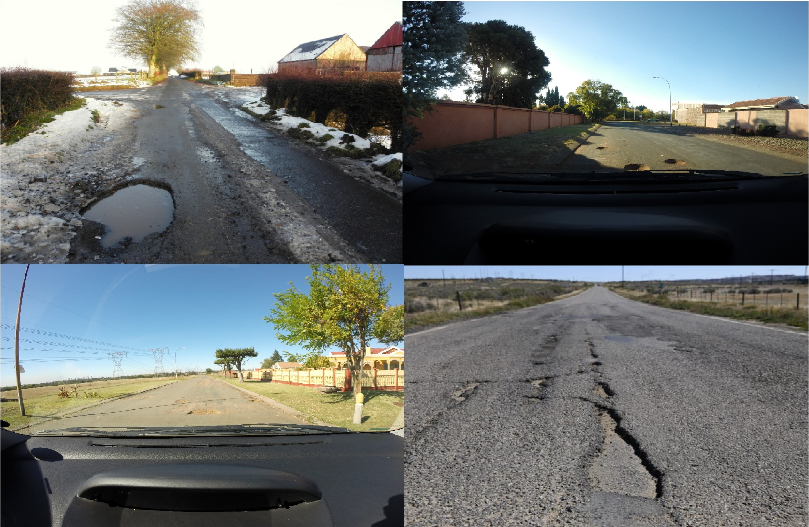
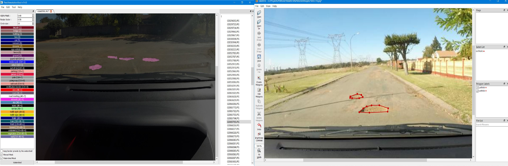
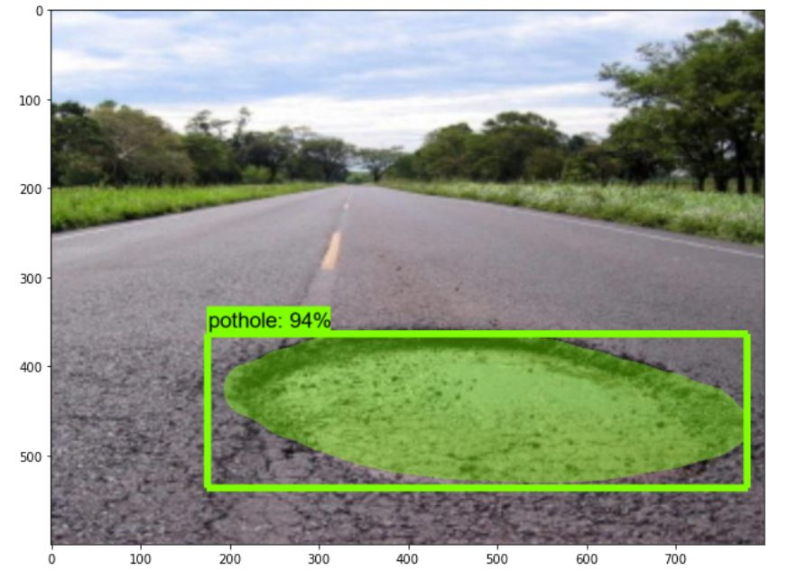

Background
According to Wikipedia “A pothole is a depression in a road surface, usually asphalt pavement, where traffic has removed broken pieces of the pavement”. Edmonton the “self proclaimed pothole capital” in Alberta, Canada reportedly spends $4.8 million on 450,000 potholes annually, as of 2015. In India every year approximately 1100 lives are lost to accidents caused by potholes source. Ordinary citizens do not have the means of communicating or reporting the bad roads to the concerned authorities while the authorities lay unaware of the situation.
Therefore, several organisations have been trying to develop tools (like webapps) where the citizens can report the potholes to the concerned authorities. There are several hackathons that have taken place with this project in mind as one of the objectives. Seeing this as a growing concern, in this project to address this problem the aim is to Develop a simple interface that uses the state of the art object detection technology to detect potholes in real time and report them using Google Maps. This article will take you through the steps required to build your very own pothole detection system. The deployment medium for this project will be on smartphones which are used by 500 million+ people in India according to Newzoo’s 2019 Global Mobile Market Report.
Tools Used:
- Python 3.6+
- Tensorflow Object Detection API
- Pixel Annotation Tool
- Anaconda Package Manager
- Flask
The workflow of the Project will be as follows:
- Environment Setup
- Dataset Gathering
- Model Training
- Deployment with Flask
- Mapping onto Google Maps
- Results
Anaconda Environment Setup
In the Beginning we will setup a new Anaconda environment and install all the necessary packages required for this project. Anaconda is a popular python package manager alongside “pip”. If you have not installed prior to this project please install it using this link.
It is a fairly straight forward installation and should not take long. You can install the Miniconda if you have some experience using the command line but if you want the GUI you can install the Anaconda Navigator with all the additional packages (this will take longer to install).
After this open “Anaconda Prompt” from your start menu and follow the rest of the installation instructions:
- Create the conda environment.
(base) C:\Users>conda create --name pothole python=3.6
- Activate the environment and upgrade pip.
(base) C:\Users>activate pothole
(pothole) C:\Users>python -m pip install --upgrade pip
- Install the other necessary packages by issuing the following commands:
(pothole) C:\Users>conda install -c anaconda protobuf
(pothole) C:\Users>pip install pillow
(pothole) C:\Users>pip install lxml
(pothole) C:\Users>pip install Cython
(pothole) C:\Users>pip install contextlib2
(pothole) C:\Users>pip install jupyter
(pothole) C:\Users>pip install matplotlib
(pothole) C:\Users>pip install opencv-python
(pothole) C:\Users>pip install labelme
(pothole) C:\Users>pip install tensorflow-gpu==1.13.1
(pothole) C:\Users>pip install git+https://github.com/philferriere/cocoapi.git#subdirectory=PythonAPI
- Clone or download the tensorflow object detection api repostiory from Github. For the purpose of this project we are using tensorflow version 1.13.1. Note Always make sure the tensorflow version installed and the tensorflow object detection api repository version is the same. Run the following command or download this repository manually.
(pothole) C:\Users>git clone https://github.com/tensorflow/models/tree/r1.13.0.git
Place these folders in a folder called “models”. You can place this “models” folder in a directory of your choice.
- Configure the PYTHONPATH environment variable:
(pothole) C:\Users>set PYTHONPATH=C:\models;C:\models\research;C:\models\research\slim
Change the directory location based on where you have store the models folder.
- Compile Protobufs and run setup.py
In the Ananconda Prompt change directories to \models\research directory:
(pothole) C:\Users>cd C:\models\research
- Run the following lines of code:
protoc --python_out=. .\object_detection\protos\anchor_generator.proto .\object_detection\protos\argmax_matcher.proto .\object_detection\protos\bipartite_matcher.proto .\object_detection\protos\box_coder.proto .\object_detection\protos\box_predictor.proto .\object_detection\protos\eval.proto .\object_detection\protos\faster_rcnn.proto .\object_detection\protos\faster_rcnn_box_coder.proto .\object_detection\protos\grid_anchor_generator.proto .\object_detection\protos\hyperparams.proto .\object_detection\protos\image_resizer.proto .\object_detection\protos\input_reader.proto .\object_detection\protos\losses.proto .\object_detection\protos\matcher.proto .\object_detection\protos\mean_stddev_box_coder.proto .\object_detection\protos\model.proto .\object_detection\protos\optimizer.proto .\object_detection\protos\pipeline.proto .\object_detection\protos\post_processing.proto .\object_detection\protos\preprocessor.proto .\object_detection\protos\region_similarity_calculator.proto .\object_detection\protos\square_box_coder.proto .\object_detection\protos\ssd.proto .\object_detection\protos\ssd_anchor_generator.proto .\object_detection\protos\string_int_label_map.proto .\object_detection\protos\train.proto .\object_detection\protos\keypoint_box_coder.proto .\object_detection\protos\multiscale_anchor_generator.proto .\object_detection\protos\graph_rewriter.proto .\object_detection\protos\calibration.proto .\object_detection\protos\flexible_grid_anchor_generator.proto
If it gives an error that the protobuf file could not be found run this after:
protoc object_detection/protos/*.proto --python_out=.
Finally we need to run the following commands:
(pothole) C:\models\research> python setup.py build
(pothole) C:\models\research> python setup.py install
- You can test if everything is working out by running the IPython Notebook present in the object_detection folder called “object_detection_tutorial.ipynb”.
(pothole) C:\models\research>cd object_detection
(pothole) C:\models\research\object_detection>jupyter notebook object_detection_tutorial.ipynb
Dataset Gathering
As always in the beginning of any Data Science or AI Project after the problem statement has been identified we move on to gathering the data or in this case images for training.
To train a robust model we need to use a lot of pictures but with variation as well. That means the potholes must be present at various angles or shapes so that our model does not lean on to one variation or in other words overfits and does not generalise for other images.
You can use the images that you have taken personally or download them from the Internet like me. For this project the idea is to detect potholes so we would not be segmenting them out based on severity but that does leave something for future scope as well. The following data sources were used for building this project:
Some of the Images used in this dataset looks this: 
We need to resize the images so that the model can be train using these resized images like 800 x 600 in this project (Unless you have unlimited GPU compute power). Use either the command prompt or anaconda prompt or any other IDE to run this script. For example in Anaconda Prompt:
(base) C:\Users> python DatasetCreation.py
The above mentioned script is available is in my Github Repo. This script will resize all the images in your directory and also perform random Train/Test Split with 80/20 splitting criteria. Now place these images inside models/research/object_detection/images to have all the data for this project in one place.
Data Labeling
Now that we have gathered the dataset we need to label the images so that the model understands what is a pothole. To label the images we need a labeling software.
For the purpose of project, I have used labelme as it is fairly simple to use. In your anaconda environment type “labelme” and the software should open up like below.
(pothole) C:\Users>labelme
Open you image from your directory and click on Create Polygon and start labeling your images. Labelme saves your labels as json files with the same name as the image name. Place the json in the same directory as your images. An example of Labelme(right) along with Pixel Annotation Tool(left) is shown below. For this project I have labeled 400 images.

Model Training
- Create TFRecords:
After labeling our entire dataset we now have to generate TFRecords which serves as input for our model training. But before that we need to convert the json labelme labels into COCO format. I have taken the script provided by Gilber Tanner in his tutorial to perform this. You can also find this in my Github Repository labeled “labelme2coco.py”. Download this and place it onto the directory where your Train/ Test images are located. Now run the following commands:
(pothole) C:\Users\models\research\object_detection\images>python labelme2coco.py train --output train.json
(pothole) C:\Users\models\research\object_detection\images>python labelme2coco.py test --output test.json
Now that the train/test data is in the COCO format we can now create the TFRecords using the create_coco_tf_record.py also created by Gilber Tanner. This script also needs to be placed and run from the object_detection folder.
python create_coco_tf_record.py --logtostderr --train_image_dir=images/train --test_image_dir=images/test --train_annotations_file=images/train.json --test_annotations_file=images/test.json --include_masks=True --output_dir=./
You should find train.record and test.record in your object_detection folder.
- Creating Label Map
The label map links class names to ID numbers. Use a text editor like Sublime Text to create a “labelmap.pbtxt” and store it inside object_detection/training folder. Inside the folder write the following:
item {
id: 1
name: 'Pothole'
}
You can define as much as you want depending on the classes you want to detect but for the purpose of this project we are only interested in detecting potholes.
This id should match with the id mentioned in your train.json and test.json files. Notice how it one number greater i.e here it is id: 0 but we mention id:1 in the labelmap file.
"categories": [
{
"supercategory": "Pothole",
"id": 0,
"name": "Pothole"
},
],
- Creating Training Configuration File:
Now we need to create a training configuration file. From the tensorflow model zoo there are a variety of tensorflow models available for Mask RCNN but for the purpose of this project we are gonna use the mask_rcnn_inception_v2_coco because of it’s speed. Download this and place it onto the object_detection folder. You can find the mask_rcnn_inception_v2_coco.config file inside the samples/config folder. Copy this folder and place it into object_detection/training folder. Now we have to make the following changes to this config file:
-
Line 10: Change num_classes to the number of different objects you want the classifier to detect.(1 in this project’s case)
-
Line 126: Change fine_tune_checkpoint to:
fine_tune_checkpoint: "<path>/models/research/object_detection/mask_rcnn_inception_v2_coco_2018_01_28/model.ckpt"
- Line 142: Change input_path to the path of the train.records file:
input_path: "<path>/models/research/object_detection/train.record"
- Line 158: Change input_path to the path of the test.records file: `
input_path: "<path>/models/research/object_detection/test.record"
- Line 144 and 160: Change label_map_path to the path of the label map:
label_map_path: "<path>/models/research/object_detection/training/labelmap.pbtxt"
- Line 150: change num_example to the number of images in your test folder.
- Training the Model:
Run the following command to start the training of the model from the object_detection folder:
python legacy/train.py --train_dir=training --pipeline_config_path=training/mask_rcnn_inception_v2_coco.config
After every interval the model saves the checkpoints in the training folder. It is a good idea to let it train till the loss is below 0.05. The time taken will depend on how powerful your GPU is.
You can view the progress of your model by opening another Anaconda Prompt Window and changing the directory to the object_detection folder and typing the following command:
(pothole) C:\models\research\object_detection>tensorboard --logdir=training
This will create a webpage on your local machine YourPCName:6006, which can be viewed through a web browser. The TensorBoard page provides information and graphs that show how the training is progressing.

You can stop the training by pressing Ctrl+C while in the command prompt window. I recommend stopping after it has created the checkpoint in your folder this usually is done every 5-10 mins depending on your compute power. The checkpoint at the highest number of steps will be used to generate the frozen inference graph.
- Exporting Inference Graph
Create a folder called “inference_graph” inside object_detection folder. Now we can create the frozen inference graph(.pb file) inside this folder. To do this issue the following command:
python export_inference_graph.py --input_type=image_tensor --pipeline_config_path=training/mask_rcnn_inception_v2_coco.config --trained_checkpoint_prefix=training/model.ckpt-2194 --output_directory=inference_graph
This frozen inference graph is the object detection classifier.
- Testing the newly trained classifier
To test the newly trained classifer you can make changes to the already existing object_detection.ipynb file or use the eval.ipynb file present in my Github Repo.
Change the directory location for the labelmap, inference_graph, .config file and the test_images directory based on your location. You should get the follwing output:

References
- Over 9300 deaths, 25000 injured in 3 years due to potholes - India Today
- Nienaber, S & Booysen, M.J. (Thinus) & Kroon, RS. (2015). Dataset of images used for pothole detection. 10.13140/RG.2.1.3646.1520
- How To Train an Object Detection Classifier for Multiple Objects Using TensorFlow (GPU) on Windows 10 - Github
- Custom Mask RCNN using Tensorflow Object Detection API - Medium
- Train a Mask R-CNN model with the Tensorflow Object Detection API - Gilbert Tanner